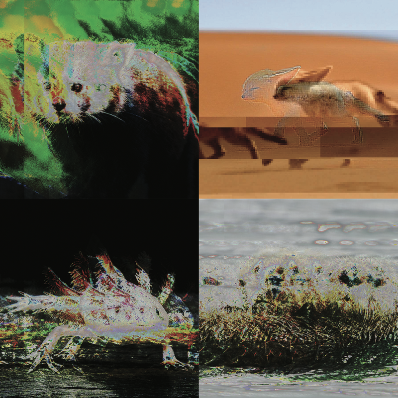

For this glitch art series I decided to created glitched images of endangered animals. They are glitched because since they are endangered, they can become extinct very soon if humanity doesn't do anything to save these animals. If they do become extinct they will only become a blurry memory in our lives, and we will start to forget about them. The images on the top right was make with TextEdit, and the rest were made with Audacity. I used a reverb and echo effect for the ones made with Audacity.
